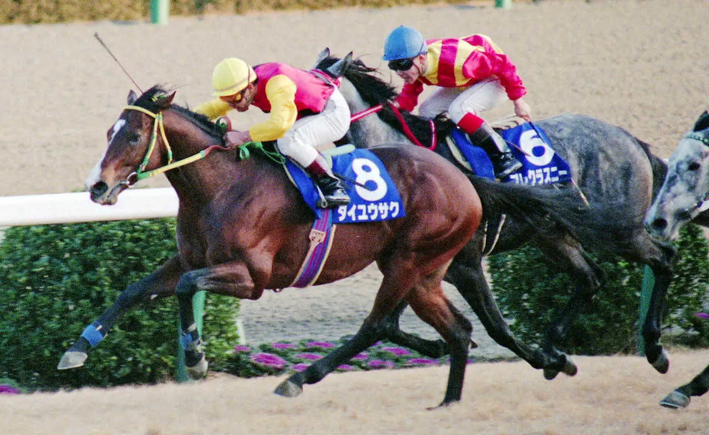
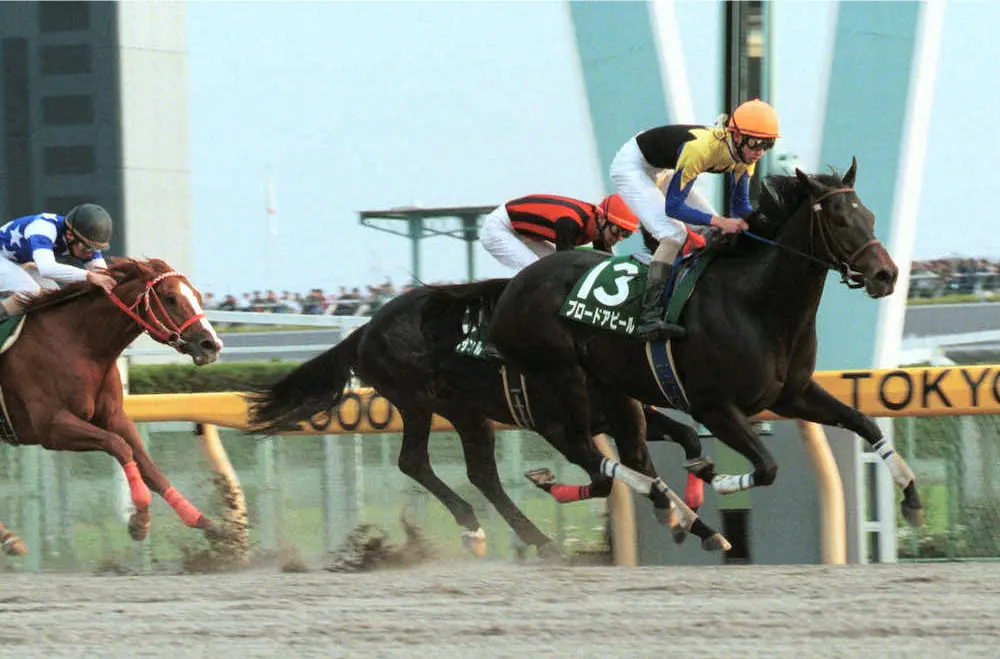

×
伝説は、いつも時代を超えて語り継がれる。
日本競馬を震わせた名馬たちの軌跡を、年代順に辿る。

外国馬が圧倒的優位とされた第4回ジャパンカップで、カツラギエースが逃げ切り勝ち。日本競馬の底力を世界に示した歴史的勝利。
1981年に創設されたジャパンカップは、世界の強豪馬を日本に招いて覇を競う国際招待競走だった。しかし創設から3年間、日本馬は一度も外国馬に勝てず、「日本馬では歯が立たない」という空気が漂っていた。
1984年、その流れを断ち切ったのが西浦勝一騎手とカツラギエースだった。逃げの手に打って出たカツラギエースは、世界の強豪がひしめく中、ハナを奪ってそのままゴールまで駆け抜けた。
この勝利は単なるレース結果にとどまらず、日本競馬が世界と互角に戦えるという証明となり、その後の日本競馬の国際化を加速させる大きな転換点となった。

「皇帝」の異名を持つシンボリルドルフが史上初の無敗三冠を達成。圧倒的な強さで日本競馬史に君臨し続けた。
シンボリルドルフが史上初の無敗での三冠を達成したのは1984年。鞍上の岡部幸雄騎手とのコンビで皐月賞・日本ダービー・菊花賞を完全制覇した。その走りは常に冷静で、まるでレースを計算し尽くしているかのように見えたという。
三冠達成後も衰えを見せず、翌年以降もジャパンカップ・有馬記念など主要G1を次々と制覇。通算成績は16戦13勝。引退後は種牡馬としてトウカイテイオーなど多くの名馬を輩出した。
日本競馬において「皇帝」と呼ばれる馬はシンボリルドルフただ一頭。その称号は今も色褪せることなく、日本競馬史最高の名馬の一頭として語り継がれている。

不振が続き引退を発表した後の有馬記念。「もう終わった」と誰もが思った芦毛の怪物が、武豊を背に奇跡の復活優勝。17万人超の大歓声は今も伝説として語り継がれる。
1990年の有馬記念。オグリキャップはその年春から不振が続き、秋のジャパンカップでも11着と大敗していた。「もう終わった馬」「引退レースを飾れればいい」と誰もが思っていた。競馬を知らない人たちにまで名を知られた国民的アイドルホースが、ひっそりと幕を閉じようとしていた。
しかしレースが始まると、オグリキャップは別の馬のように生き生きと走り始めた。武豊騎手が手綱を緩めると、かつての輝きが蘇ったかのような末脚が炸裂。先頭に立ったオグリキャップに、中山競馬場は割れんばかりの歓声に包まれた。
この日の観客数は17万人超。第二次競馬ブームの象徴であったオグリキャップが、引退の舞台で魅せた奇跡のラストランは、日本競馬史上最も感動的な瞬間の一つとして今も語り継がれている。

圧倒的1番人気のメジロマックイーンが揃った有馬記念で、13番人気のダイユウサクが大逃げを打って大金星。「競馬に絶対はない」を体現した歴史的番狂わせ。
1991年の有馬記念は、天皇賞春秋連覇の絶対王者・メジロマックイーンが圧倒的1番人気に推され、誰もがメジロマックイーンの勝利を疑わなかった。対してダイユウサクは重賞未勝利の13番人気。単勝オッズは100倍を超えていた。
しかしスタートが切られると、ダイユウサクは熊沢重文騎手の手綱のもと一気にハナを奪い、そのまま他馬を引き離す大逃げを打った。直線でも脚色が衰えず、最後まで粘り切って1着でゴール。メジロマックイーンは3着に終わった。
この結果は大波乱として競馬史に刻まれており、「競馬に絶対はない」を体現した一戦として今も語り草となっている。展開が嵌まれば格下の馬でも最強馬を打ち倒せる——それが競馬の最大の魅力であることを証明した伝説のレースだ。

根岸ステークスで見せた後方最後方からの信じられない末脚での差し切り勝ち。そのインパクトは今も「競馬史上最高の末脚の一つ」として語り継がれる。
1999年の根岸ステークス。ブロードアピールはスタートから最後方に近い位置取りで、先頭との差は絶望的なほど離れていた。短距離ダートレースでこれほど後ろからでは、通常どれだけ末脚があっても物理的に届かない。
しかし直線に入ると、ブロードアピールは文字通り「別次元」の加速を見せた。外から一頭ずつ、まるで止まっているかのように前の馬を抜き去り、最後は圧倒的な着差をつけてゴール。その末脚はまるで「後ろから飛んでくる砲弾」と形容された。
ブロードアピールはその後も短距離ダート路線でトップを走り続け、牝馬ながらダート最強クラスの実力を誇示した。根岸ステークスでのあの一瞬は、今も「競馬史上最高の末脚映像」として語り継がれている。

2000年、古馬の主要G1を全て制覇し年間無敗を達成した「世紀末覇王」。前人未到の古馬G1完全制覇は永遠に語り継がれる。
2000年のテイエムオペラオーの活躍は、競馬史でも類を見ない圧倒的なものだった。古馬になった2000年、春の天皇賞から始まり宝塚記念・天皇賞（秋）・ジャパンカップ・有馬記念と、古馬G1を連続して全て制覇。その年の古馬G1全勝という空前絶後の記録を打ち立てた。
和田竜二騎手との「人馬一体」のレースぶりも評価が高く、常に先行から粘り強く勝ち切るスタイルで、どんなペースになっても崩れることがなかった。当時の賞金獲得額も歴代1位を記録した。
引退後はその実績に比して種牡馬として産駒成績は期待を下回ったが、競走馬としての2000年の無双ぶりは日本競馬史に永遠に刻まれている。「世紀末覇王」の称号は最強の古馬として今も語り継がれる。

「日本近代競馬の結晶」と称された名馬が、武豊を背に飛ぶような走りで史上2頭目の無敗三冠を達成した。
2005年の菊花賞。実況アナウンサーが叫んだ「世界のホースマンよ見てくれ、これが日本近代競馬の結晶だ！」という言葉は、そのままディープインパクトという馬を表す永遠の名言となった。
ディープインパクトの走りは他の馬と明らかに違った。後方から一気に加速する際、まるで地面を蹴るのではなく浮き上がるように見えたことから「飛んでいる」と形容された。武豊騎手も「あんな馬には二度と乗れない」と語っている。
無敗の三冠達成後も天皇賞・春、宝塚記念、ジャパンカップ、有馬記念と主要G1を制覇。引退後は種牡馬として日本競馬を支配し、コントレイル・ジェンティルドンナなど無数の名馬を送り出した。競走馬・種牡馬両方でここまでの実績を残した馬は史上類を見ない。

日本馬の悲願・凱旋門賞制覇に最も近づいた一頭。2012年は残り200mで先頭に立ちながら差し返されてハナ差2着。翌年も2着と、日本競馬を世界最高峰へと近づけた。
2012年の凱旋門賞。残り200mでオルフェーヴルは先頭に立った。日本中が固唾を飲んで見守る中、「ついに日本馬が凱旋門賞を制する」という瞬間が訪れるかに思われた。しかしそこから、オルフェーヴルらしい「らしくない」ドラマが待っていた。
先頭に立った直後、オルフェーヴルは内側によれ始め、その隙をソレミアに差し返されてハナ差2着。あと100mがあれば——と誰もが思った悔恨の2着だった。翌2013年も2着と、2年連続で日本馬の凱旋門賞制覇の夢を惜しいところで逃した。
しかしこの2年間のオルフェーヴルの走りは、日本馬が世界最高峰のレースで互角以上に戦えることを証明した。「黄金の暴君」の凱旋門賞挑戦は、日本競馬史上最高のドラマの一つとして永遠に語り継がれるだろう。

父ディープインパクトに続き日本ダービーを制したキズナ。「日本を繋ぐ」という名の通り、父子二代でのダービー制覇という感動的なドラマを届けた。
「キズナ」という名前は東日本大震災からの復興を祈って名付けられた。「日本を繋ぐ絆」という願いが込められたその名前の通り、キズナは日本中の競馬ファンの心を一つにする活躍を見せた。
2013年の日本ダービー。父ディープインパクトもかつて同じ舞台を制した東京競馬場の直線で、キズナは武豊騎手の手綱のもと末脚を爆発させた。父と同じ騎手、同じ舞台でのダービー制覇は、単なるレース結果を超えた感動的なドラマだった。
父ディープインパクトが2005年に制したダービー、その産駒キズナが2013年に制したダービー。親子二代での制覇は、ディープインパクトという偉大な種牡馬の証明でもあり、日本競馬の血の継承を象徴する出来事だった。

幾度もビッグレースで惜敗を繰り返してきたシュヴァルグランがついにジャパンカップを制覇。遅咲きの大器が掴んだ悲願の頂点。
シュヴァルグランはハーツクライ産駒らしく、本格化が遅かった。2016年のジャパンカップでも2着と惜敗し、「あと一歩届かない馬」というイメージがつきまとっていた。
2017年のジャパンカップ。鞍上はH・ボウマン騎手。キタサンブラックをはじめ強豪が揃った中、シュヴァルグランは直線で馬群を割って先頭に立ち、粘るキタサンブラックをクビ差抑えてゴールした。悲願の国際G1制覇の瞬間だった。
遅咲きながらも頂点に立ったシュヴァルグラン。ジャパンカップの激戦を制した「偉大な馬（仏語）」の名に恥じない名勝負だった。

3歳牝馬ながら2分20秒6の世界レコードで圧勝。そのレースでキセキが見せた世界的な大逃げもまた伝説——あの日は二つの伝説が生まれた。
2018年のジャパンカップは、二つの意味で歴史に残るレースだった。一つはアーモンドアイの世界レコード。2分20秒6というタイムは当時の芝2400m世界最高記録で、3歳牝馬がこれほどのタイムを叩き出したことは世界の競馬関係者を震撼させた。
もう一つはキセキの大逃げだ。キセキは前半から飛ばしに飛ばし、1000m通過が57秒台という世界レベルのハイペースを刻んだ。通常このペースで逃げれば後半は失速するはずが、キセキは最後まで粘り込んで3着に残った。アーモンドアイの驚異的なタイムの背景には、このキセキの世界的なハイペースがあったことを忘れてはならない。
アーモンドアイはその後も勝ち続け、最終的に芝G1・9勝という日本記録を打ち立てて引退。そしてキセキの「隠れた世界的パフォーマンス」も、競馬を深く知る人々の間で語り継がれている。

父ディープの血を継いだコントレイルが無敗三冠達成。同年デアリングタクトも無敗の牝馬三冠を達成し、史上初の「同年無敗三冠同時誕生」という奇跡が起きた。
2020年の競馬界は、まさに「奇跡の年」だった。父ディープインパクトの産駒コントレイルが皐月賞・ダービー・菊花賞を無敗で制覇し、父と同じ無敗三冠を達成。父子二代での無敗三冠という日本競馬史上初の記録が生まれた。
さらに同じ年、牝馬戦線ではデアリングタクトが桜花賞・オークス・秋華賞を無敗で制覇。牝馬の無敗三冠は史上3頭目だったが、牡牝同年での無敗三冠同時誕生は競馬史上初の快挙だった。
新型コロナウイルスで世界が混乱した2020年。無観客のレースが続く中でも、コントレイルとデアリングタクトは走り続け、歴史的な記録を残した。その偉業は苦しい時代の人々にとって大きな希望の光となった。
天皇賞（秋）でG1最多勝記録を更新し、最終的に芝G1・9勝という空前絶後の記録を打ち立てて引退。「史上最強牝馬」の称号は永遠に輝き続ける。
アーモンドアイは2018年の桜花賞からG1を勝ち続け、2020年の天皇賞（秋）でシンボリルドルフ・テイエムオペラオーらが持つG1・7勝の最多記録を更新した。そして同年のジャパンカップでも勝利し、最終的にG1・9勝という前人未到の記録に到達した。
特に印象的だったのは、世代交代の激しい競馬界で5年近くにわたってトップを走り続けたこと。3歳から6歳まで、牝馬・牡馬を問わず最強クラスの相手と戦い続け、常に最高峰のパフォーマンスを見せ続けた。
引退レースとなった2020年有馬記念こそクロノジェネシスの3着に敗れたが、それはアーモンドアイの偉大さを何ら損なうものではない。芝G1・9勝という記録は今も破られておらず、「史上最強牝馬」の称号は揺るがない。

武豊騎手とのコンビで最速タイのレコードタイムでダービーを制覇。「世界を駆ける末脚」でその後も国内外を問わず頂点を目指し続けた。
2022年の日本ダービー。ドウデュースは後方待機から直線で驚異的な末脚を炸裂させ、最速タイのレコードタイムでゴールした。鞍上は武豊騎手——日本ダービー6勝目という偉業も同時に達成された。
父ハーツクライもかつて有馬記念を制した名馬。その息子が武豊騎手とともにダービーを制するドラマは、世代を超えた競馬の物語として多くのファンの胸を打った。
ダービー後も有馬記念・ドバイ遠征など国内外で活躍を続け、その末脚は世界のトップホースとも互角に渡り合えることを証明し続けた。世界を舞台に駆け続けたドウデュースの走りは、令和競馬の象徴の一つだ。

ジャパンカップを圧勝し、国際競馬統括機関連盟が発表する世界ランキングで日本馬として初の1位を獲得。「天衣無縫」の走りで世界の頂点に立った。
イクイノックスは2022年の有馬記念で古馬を相手に勝利したあたりから「この馬は別格だ」という空気が漂い始めた。2023年になると、その強さはさらに次元が上がった。
ドバイシーマクラシック、天皇賞（秋）、ジャパンカップと国内外のG1を次々と制覇。特にジャパンカップでは外国馬を寄せ付けない圧勝で、国際競馬統括機関連盟（IFHA）が発表する世界ランキングで日本馬として史上初の1位を獲得した。
2023年末に有馬記念を制して引退。通算12戦10勝という成績と、世界1位という称号を引っ提げて種牡馬入りしたイクイノックス。その産駒が活躍する日が、すでに楽しみにされている。

日本のダート路線から世界へ飛び出し、BCクラシックを制覇。サウジカップを連覇するという偉業も達成。日本ダート馬が世界最高峰の舞台で頂点に立った。
フォーエバーヤングが登場するまで、日本のダート馬が世界のトップと互角に戦えるとは思われていなかった。芝路線では世界トップレベルに到達していた日本競馬だが、ダートでは長らく世界との差があった。
しかしフォーエバーヤングはその常識を覆した。BCクラシック（ダート2000m・米国最高峰レース）での勝利は日本ダート馬として歴史的快挙。さらにサウジカップ連覇でその実力が本物であることを証明した。
芝での世界制覇（イクイノックス）に続き、ダートでも世界の頂点に立ったフォーエバーヤング。この馬の登場により、日本競馬は芝・ダート両路線で世界トップレベルの競馬大国であることが証明された。